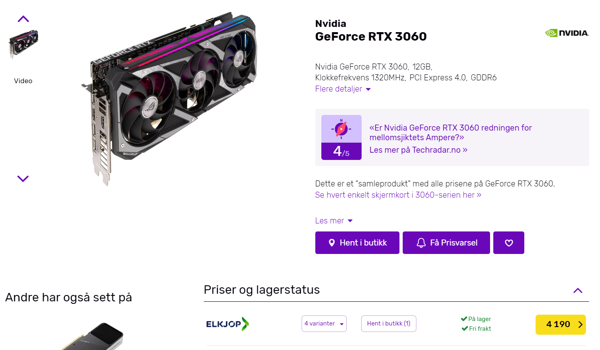
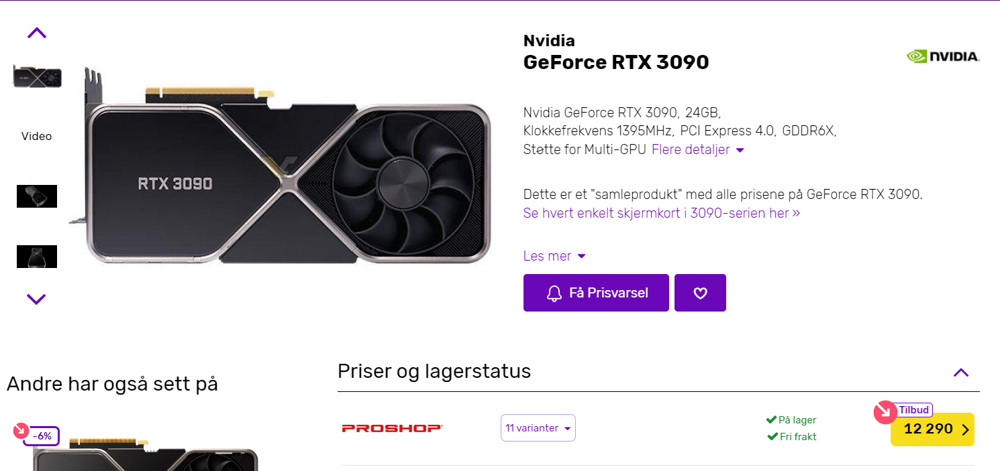
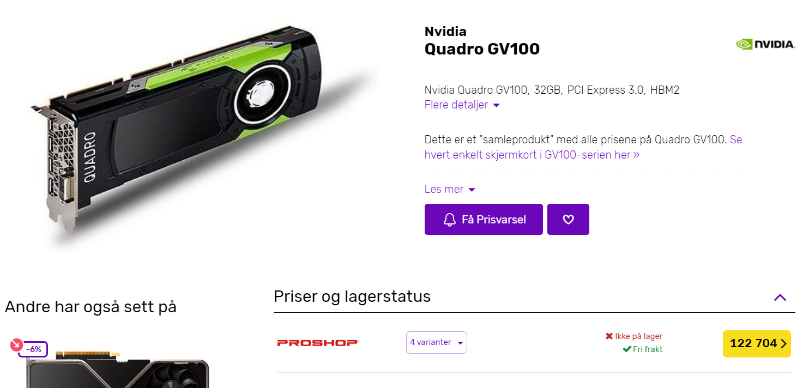
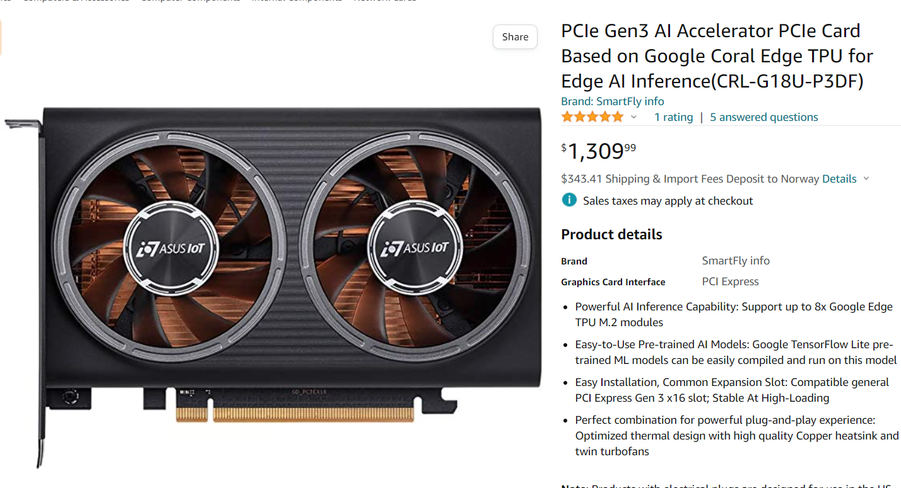

<!DOCTYPE html>
<html lang="en">
  <head>
    <meta charset="utf-8" />
    <meta name="viewport" content="width=device-width, initial-scale=1.0, maximum-scale=1.0, user-scalable=no" />

    <title>Datakomponenter</title>
    <link rel="stylesheet" href="dist/reveal.css" />
    <link rel="stylesheet" href="dist/theme/black.css" id="theme" />
    <link rel="stylesheet" href="plugin/highlight/monokai.css" />
	<link rel="stylesheet" href="css/layout.css" />
	<link rel="stylesheet" href="plugin/customcontrols/style.css">
	<link rel="stylesheet" href="plugin/chalkboard/style.css">

    <link rel="stylesheet" href="css/presentable.css" />

    <script defer src="dist/fontawesome/all.min.js"></script>

	<script type="text/javascript">
		var forgetPop = true;
		function onPopState(event) {
			if(forgetPop){
				forgetPop = false;
			} else {
				parent.postMessage(event.target.location.href, "app://obsidian.md");
			}
        }
		window.onpopstate = onPopState;
		window.onmessage = event => {
			if(event.data == "reload"){
				window.document.location.reload();
			}
			forgetPop = true;
		}

		function fitElements(){
			const itemsToFit = document.getElementsByClassName('fitText');
			for (const item in itemsToFit) {
				if (Object.hasOwnProperty.call(itemsToFit, item)) {
					var element = itemsToFit[item];
					fitElement(element,1, 1000);
					element.classList.remove('fitText');
				}
			}
		}

		function fitElement(element, start, end){

			let size = (end + start) / 2;
			element.style.fontSize = `${size}px`;

			if(Math.abs(start - end) < 1){
				while(element.scrollHeight > element.offsetHeight){
					size--;
					element.style.fontSize = `${size}px`;
				}
				return;
			}

			if(element.scrollHeight > element.offsetHeight){
				fitElement(element, start, size);
			} else {
				fitElement(element, size, end);
			}		
		}


		document.onreadystatechange = () => {
			fitElements();
			if (document.readyState === 'complete') {
				if (window.location.href.indexOf("?export") != -1){
					parent.postMessage(event.target.location.href, "app://obsidian.md");
				}
				if (window.location.href.indexOf("print-pdf") != -1){
					let stateCheck = setInterval(() => {
						clearInterval(stateCheck);
						window.print();
					}, 250);
				}
			}
	};


        </script>
  </head>
  <body>
    <div class="reveal">
      <div class="slides"><section  data-markdown><script type="text/template">
# Datakomponenter
<!-- .slide: data-background-opacity=".2" data-background-image="pexels/technology-computer-lines-board-50711.jpg" -->
La oss bygge PC - litt om hva å se etter
</script></section><section  data-markdown><script type="text/template"># CPU
<!-- .slide: data-background-opacity=".2" data-background-image="pexels/selective-focus-photography-of-motherboard-1432673.jpg" -->
Hjernen til maskinen, viktig for ytelse, kan være priseffektiv
- Delegerer oppgaver<!-- .element: class="fragment" -->
- Håndterer lagring og logikk<!-- .element: class="fragment" -->
- Gaming: mindre kjerner, mer fart (GHz) (Moderne spill bruker flere kjerner)<!-- .element: class="fragment" -->
- Produktivitet: mest mulig kjerner<!-- .element: class="fragment" -->
</script></section><section  data-markdown><script type="text/template"># CPU
<!-- .slide: data-background-opacity=".2" data-background-image="pexels/selective-focus-photography-of-motherboard-1432673.jpg" -->
- Fremtiden: ARM / Mobil, lite strøm, lite kraft, men optimalisert<!-- .element: class="fragment" -->
- Apple Silicon (ARM, M1) 2020, x86 fra 1978.<!-- .element: class="fragment" -->
- 40W vs 115W<!-- .element: class="fragment" -->
</script></section><section  data-markdown><script type="text/template"># GPU - Grafikkort
<!-- .slide: data-background-opacity=".2" data-background-image="pexels/person-holding-a-graphics-card-10558582.jpg" -->
Det som tegner grafikk, kan bli dyrt
- Optimalisert til å regne avansert matematikk<!-- .element: class="fragment" -->
- Sender videosignal til tilkoblede display<!-- .element: class="fragment" -->
- Brukes både i gaming og produktivitetsoppgaver<!-- .element: class="fragment" -->
- GPU Memory (RAM) - Hvor mye grafisk data kan vi ha i kortidsminne? (Teksturer, 3D-modeller, filmavspilling)<!-- .element: class="fragment" -->
- I nye ARM så brukes systemminne (vanlig RAM) som GPU minne.<!-- .element: class="fragment" --></script></section><section  data-markdown><script type="text/template"># GPU - Grafikkort
<!-- .slide: data-background-opacity=".2" data-background-image="pexels/person-holding-a-graphics-card-10558582.jpg" -->
- GPU har en prosessor, ofte parallell med mengden RAM, høyere = bedre.<!-- .element: class="fragment" -->
- Høyere oppløsning (4K), høyere fart (240Hz), høyere krav.<!-- .element: class="fragment" -->
- Nvidia RTX - trygt for gaming og redigering (CUDA-kjerner).<!-- .element: class="fragment" -->
- Godt grafikkort bør prioriteres for alt bortsett fra kontorarbeid.<!-- .element: class="fragment" -->
- Finnes også: AI Accelerator kort<!-- .element: class="fragment" -->
</script></section><section  data-markdown><script type="text/template"># Eksempel: RTX 3060
Helt kurrant for 1440p, til "billig" penge (~4000,-)
<p style="line-height: 0" class="reset-paragraph image-paragraph"></img></p>

</script></section><section  data-markdown><script type="text/template"># Eksempel: RTX 3090
Overkill for gaming, *helt kurrant* for redigering - 4k/8k (12500,-)
<p style="line-height: 0" class="reset-paragraph image-paragraph"></img></p>

</script></section><section  data-markdown><script type="text/template"># Eksempel: GV100
Elendig til gaming, god til å lage spill, helt greit til 3d-modellering, simulering og film (~100.000,-)
<p style="line-height: 0" class="reset-paragraph image-paragraph"></img></p>

</script></section><section  data-markdown><script type="text/template"># Eksempel: IoT Accelerator
Kan ikke game, kjenner igjen ansikter (18.000,-)
<p style="line-height: 0" class="reset-paragraph image-paragraph"></img></p>

</script></section><section  data-markdown><script type="text/template"># RAM
<!-- .slide: data-background-opacity=".2" data-background-image="pexels/green-and-black-computer-ram-stick-6636474.jpg" -->
Kortiddsminne - hvor mye kan du ha aktivt på maskinen
- Går du tom, så bruker du disken (SWAP) - treeeeegt<!-- .element: class="fragment" -->
- 16GB er nesten minimum i 2022.<!-- .element: class="fragment" -->
- 32GB holder til det meste<!-- .element: class="fragment" -->
- 500GB er "lite" hvis du jobber med lyd<!-- .element: class="fragment" -->
- Når maskiner bytter til ARM vil vi trenge mer, siden VRAM og RAM blir samlet.<!-- .element: class="fragment" -->
</script></section><section  data-markdown><script type="text/template"># Hovedkort
<!-- .slide: data-background-opacity=".2" data-background-image="pexels/green-motherboard-163140.jpg" -->
Velg noe som passer resten. Bruk en kompatabilitetsliste (pcpartpicker)
- Dyrere != bedre<!-- .element: class="fragment" -->
- Dyrere = mer tilkoblinger<!-- .element: class="fragment" -->
- Kan ha betydning for oppstart av maskinen (starter operativsystemet)<!-- .element: class="fragment" -->
- Som regel trenger "gamere" bare 1x PCIe 16x - plass til et 16x grafikkort, 16x betyr stort tilkoblingskort.<!-- .element: class="fragment" -->
</script></section><section  data-markdown><script type="text/template"># Hovedkort
<!-- .slide: data-background-opacity=".2" data-background-image="pexels/green-motherboard-163140.jpg" -->
- Hvor mye USB trenger du, WiFi, 10GbE nett, antall disker, ekstra kort?<!-- .element: class="fragment" -->
- Formfaktor er viktig<!-- .element: class="fragment" -->
- ITX = liten<!-- .element: class="fragment" -->
- ATX = stor<!-- .element: class="fragment" -->
- eATX = større<!-- .element: class="fragment" -->
</script></section><section  data-markdown><script type="text/template"># Lagring
<!-- .slide: data-background-opacity=".2" data-background-image="pexels/blue-bright-lights-373543.jpeg" -->
Hvor ligger dataen?
- SSD er alfa-omega for fart, kan koste penger<!-- .element: class="fragment" -->
- Operativsystemet bør være på en SSD<!-- .element: class="fragment" -->
- Egen disk til programmer/spill/annet er bra - kan lese diskene parallellt / samtidig<!-- .element: class="fragment" -->
- Disker er oppgitt i fart og størrelse<!-- .element: class="fragment" -->
- 500GB SSD bør være minimum i 2022 til disk 1<!-- .element: class="fragment" -->
- Større disk 2, stor til backup? medium til spill?<!-- .element: class="fragment" -->
</script></section><section  data-markdown><script type="text/template"># Kabinett
<!-- .slide: data-background-opacity=".2" data-background-image="pexels/desktop-system-unit-with-lighted-computer-fans-6913135.jpg" -->
Formfaktor, utseendet, sørg for at ting passer (pcpartpicker)
- ITX = liten<!-- .element: class="fragment" -->
- ATX = stor<!-- .element: class="fragment" -->
- eATX = større<!-- .element: class="fragment" -->
- Rack = monteres i skap<!-- .element: class="fragment" -->
</script></section><section  data-markdown><script type="text/template"># PSU
<!-- .slide: data-background-opacity=".2" data-background-image="pexels/technology-computer-lines-board-50711.jpg" -->
Strømforsyning, fra vegg til komponent
- Må ha nok strøm, 550W er minimum i 2022<!-- .element: class="fragment" -->
- Ha litt hoderom, bedre med for mye enn for lite<!-- .element: class="fragment" -->
- Noen strømforsyninger er mer bærekraftige enn andre, dvs. de sløser mindre strøm<!-- .element: class="fragment" -->
- Gold rating eller høyere er bra for miljøet<!-- .element: class="fragment" -->
- Modulær strømforsyning er bra, dvs pluggene kan tas ut, kontra ketchup og sennepskabler<!-- .element: class="fragment" -->
</script></section><section  data-markdown><script type="text/template"># Dill og dall (Periferi)
<!-- .slide: data-background-opacity=".2" data-background-image="pexels/macbook-pro-displaying-website-version-2-on-table-285814.webp" -->
RGB, kjøling, vifter, tastatur, mus, skjerm, cablemods?
- Alle vet at flammeklister gir 10% mer FPS, det ble bevist i 2018<!-- .element: class="fragment" -->
- Bedre kjøling kan redusere støynivå<!-- .element: class="fragment" -->
- Smak og behag<!-- .element: class="fragment" -->
</script></section><section  data-markdown><script type="text/template"># Prøv selv
<!-- .slide: data-background-opacity=".2" data-background-image="pexels/black-and-gray-computer-motherboard-2588757.jpeg" -->
Lag en handleliste over drømme PCen. (PcPartPicker.com)

Bruk gjerne Google/YouTube!
</script></section><section  data-markdown><script type="text/template"># Innhold:
<!-- .slide: data-background-opacity=".2" data-background-image="pexels/black-and-gray-computer-motherboard-2588757.jpeg" -->
Budsjett - 20.000? Velg selv?
- Kostnadsoversikt (norske priser)<!-- .element: class="fragment" -->
- Bilde av komponentene<!-- .element: class="fragment" -->
- Inkluder periferi - stol, bord(?), RGB, skjerm, tastatur..<!-- .element: class="fragment" -->
- Moodboard / bilder av drømmeoppsettet<!-- .element: class="fragment" -->
- Kort tekst om hva du har tenkt, forventninger til PCen, hva kan den brukes til? Hvor god grafikk?<!-- .element: class="fragment" --></script></section></div>
    </div>

    <script src="dist/reveal.js"></script>

    <script src="plugin/markdown/markdown.js"></script>
    <script src="plugin/highlight/highlight.js"></script>
    <script src="plugin/zoom/zoom.js"></script>
    <script src="plugin/notes/notes.js"></script>
    <script src="plugin/math/math.js"></script>
	<script src="plugin/mermaid/mermaid.js"></script>
	<script src="plugin/chart/chart.min.js"></script>
	<script src="plugin/chart/plugin.js"></script>
	<script src="plugin/customcontrols/plugin.js"></script>
	<script src="plugin/chalkboard/plugin.js"></script>

    <script>
      function extend() {
        var target = {};
        for (var i = 0; i < arguments.length; i++) {
          var source = arguments[i];
          for (var key in source) {
            if (source.hasOwnProperty(key)) {
              target[key] = source[key];
            }
          }
        }
        return target;
      }

	  function isLight(color) {
		let hex = color.replace('#', '');

		// convert #fff => #ffffff
		if(hex.length == 3){
			hex = `${hex[0]}${hex[0]}${hex[1]}${hex[1]}${hex[2]}${hex[2]}`;
		}

		const c_r = parseInt(hex.substr(0, 2), 16);
		const c_g = parseInt(hex.substr(2, 2), 16);
		const c_b = parseInt(hex.substr(4, 2), 16);
		const brightness = ((c_r * 299) + (c_g * 587) + (c_b * 114)) / 1000;
		return brightness > 155;
	}

	var bgColor = getComputedStyle(document.documentElement).getPropertyValue('--r-background-color').trim();

	if(isLight(bgColor)){
		document.body.classList.add('has-light-background');
	} else {
		document.body.classList.add('has-dark-background');
	}

      // default options to init reveal.js
      var defaultOptions = {
        controls: true,
        progress: true,
        history: true,
        center: true,
        transition: 'default', // none/fade/slide/convex/concave/zoom
        plugins: [
          RevealMarkdown,
          RevealHighlight,
          RevealZoom,
          RevealNotes,
          RevealMath.MathJax3,
		  RevealMermaid,
		  RevealChart,
		  RevealCustomControls,
		  RevealChalkboard, 
        ],

		mathjax3: {
			mathjax: 'plugin/math/mathjax/tex-mml-chtml.js',
		},

		customcontrols: {
			controls: [
				{ icon: '<i class="fa fa-pen-square"></i>',
				title: 'Toggle chalkboard (B)',
				action: 'RevealChalkboard.toggleChalkboard();'
				},
				{ icon: '<i class="fa fa-pen"></i>',
				title: 'Toggle notes canvas (C)',
				action: 'RevealChalkboard.toggleNotesCanvas();'
				},
			]
		},
      };

      // options from URL query string
      var queryOptions = Reveal().getQueryHash() || {};

      var options = extend(defaultOptions, {"width":960,"height":700,"margin":0.04,"controls":true,"progress":true,"slideNumber":false,"transition":"slide","transitionSpeed":"default"}, queryOptions);
    </script>

    <script>
      Reveal.initialize(options);
    </script>
  </body>
</html>
